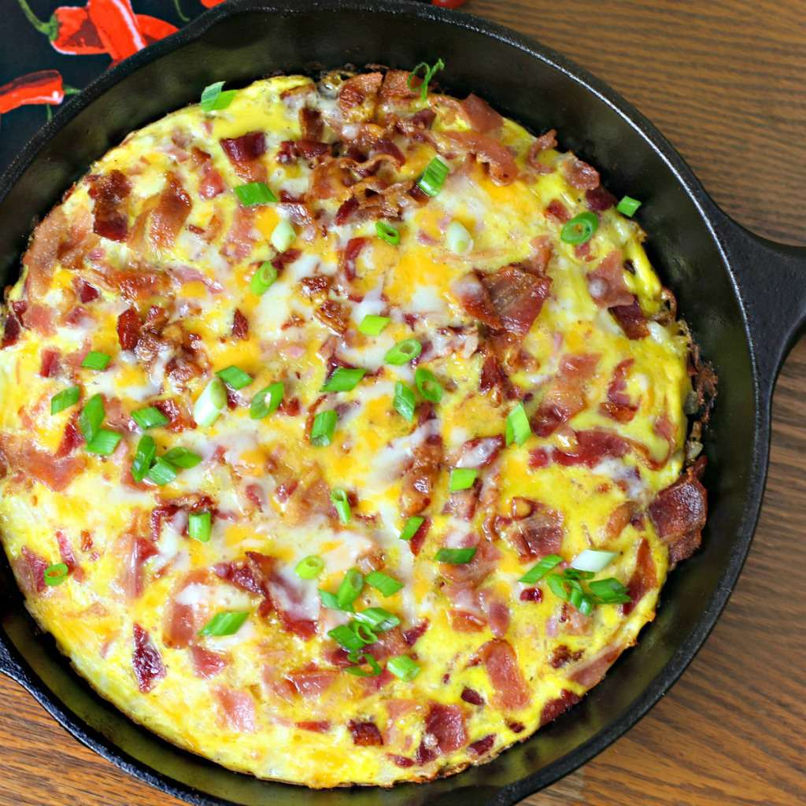

Home
Skillet

Description
This cheesy hash brown skillet with bacon, sausage, and egg is a scrumptious, easy breakfast. Garnish with 2 thinly sliced green onions, if desired.
Ingredients
- 6 slices bacon, cut into 1-inch pieces
- 1 link smoked pineapple-bacon chicken sausage, cut into slices
- 1 tablespoon canola oil
- 1 teaspoon butter
- 2 and 1/2 cups frozen hash brown potatoes, thawed
- 1/2 onion, chopped
- 3/4 teaspoon garlic powder, divided
- 1/2 teaspoon onion powder
- 1/4 teaspoon salt, or more to taste
- 1/4 teaspoon ground black pepper, or more to taste
- 1 cup shredded Cheddar cheese
- 6 large eggs
- 1 tablespoon milk
Steps
- 1. Preheat the oven to 350 degrees F (175 degrees C).
- 2. Place bacon in a 10-inch skillet and cook over medium heat, stirring occasionally, until crisp, about 10 minutes. Use a slotted spoon to remove bacon to a paper towel-lined small bowl. Discard 1/2 of the bacon fat using a spoon.
- 3. Cook sausage in remaining bacon fat in the hot skillet until browned on both sides, about 5 minutes. Remove to the bowl with bacon.
- 4. Heat canola oil and butter in the same skillet over medium heat. Add hash browns and onion. Stir in 1/2 teaspoon garlic powder, onion powder, salt, and black pepper. Spread hash brown mixture evenly in the skillet; cook, undisturbed, until browned, about 5 minutes. Turn hash browns over and sprinkle with Cheddar cheese.
- 5. Whisk together eggs, milk, and remaining 1/4 teaspoon garlic powder in a medium bowl; season with salt and pepper. Pour egg mixture over cheese-covered hash browns in the skillet. Sprinkle the top with bacon and sausage pieces.
- 6. Bake in the preheated oven until the top is puffed, cheese is melted, and a knife inserted into the center comes out clean, 10 to 15 minutes.